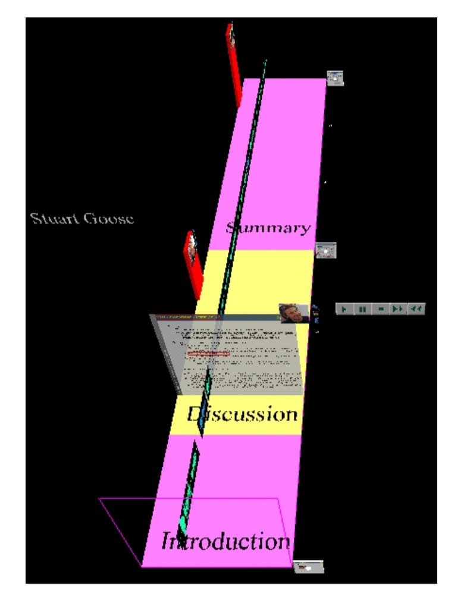
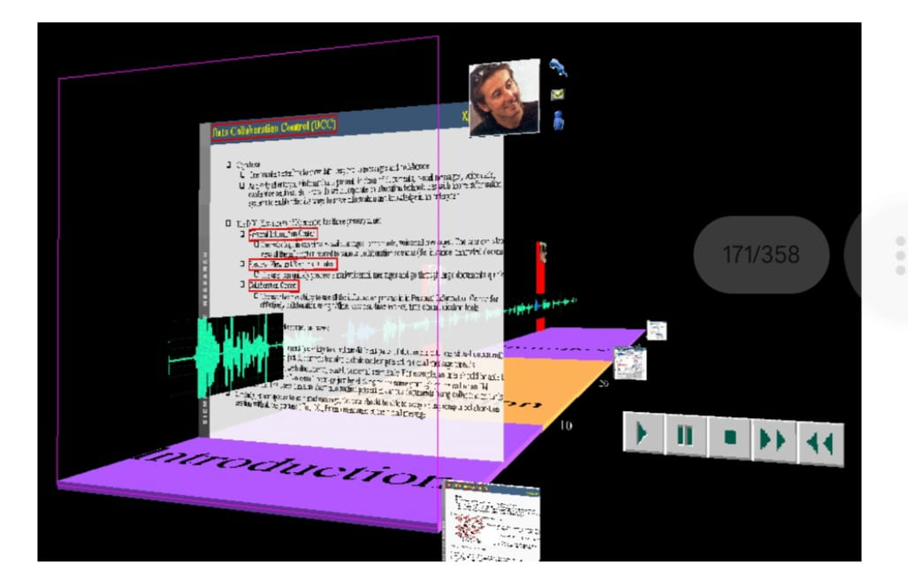
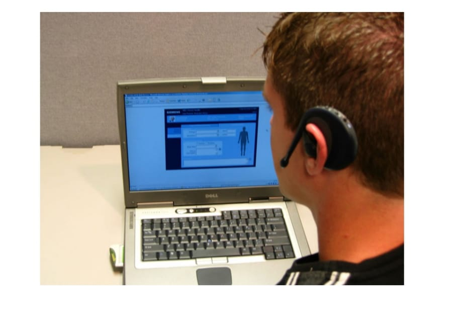
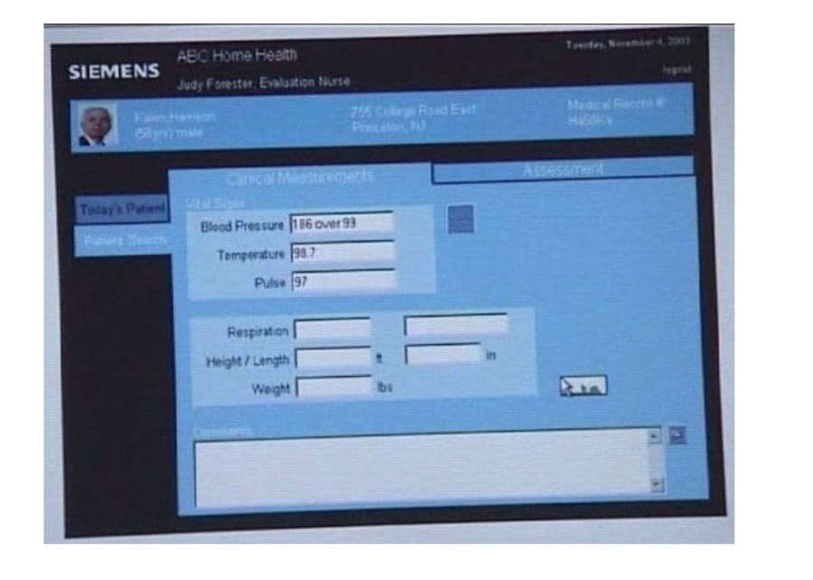
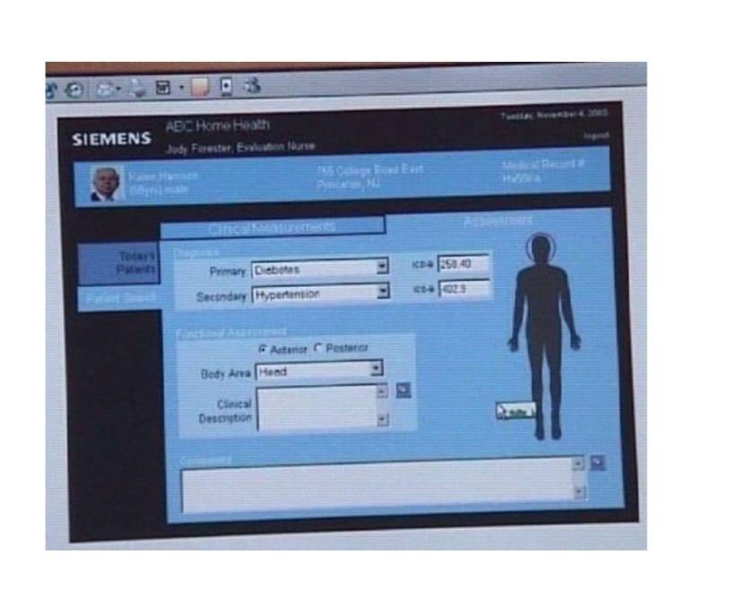
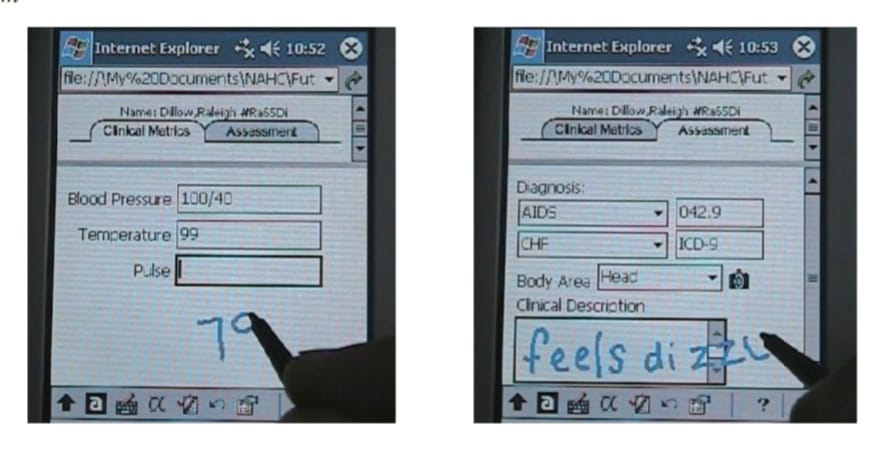

<!DOCTYPE html>
<html lang="en">
<head>
    <meta charset="UTF-8">
    <meta name="viewport" content="width=device-width, initial-scale=1.0">
    <link rel="stylesheet" href="style.css">
    <title>Document</title>
</head>
<body>
    <section class="container1">
        <div class="data"><br>
            <p>Figure 7. A visual overview of a session that conveys structure, documents used, and
                action items assigned<br></p>
                
                <p>Figure 8. The detail view of a session<br></p>
                
                <p>current speaker is shown in the corner of the current document, along with an icon that
                    can be clicked on to initiate a phone call, e-mail, or instant message to that person. In
                    addition, red columns along the left side of the timeline indicate assigned action items
                    with a portrait image of the person responsible.<br>
                    A VCR metaphor is provided to assist with navigation, and a VCR control panel can be
                    seen at the right of the interface. When the play button is activated, the exploded view
                    of the current document begins to glide backwards through time in synchrony with the
                    audio stream played at normal speed. The forward and rewind buttons move the current
                    position to the beginning of the respective session topic<br><br></p>
        </div>
    </section>
    <section class="container2">
        <div class="data">
            <br><h2>In Support of Home Health:
                Nomadic Nurse<br></h2><br>
                <p>Home healthcare nursing is an increasingly widespread type of healthcare that typically
                    involves a nurse driving to a patient’s place of residence to provide the necessary
                    monitoring and treatment. There are a wide variety of cases in which home healthcare is
                    recommended by physicians, and recent years have seen a steady increase in the need
                    for this type of care (Giles, 1996). While many industry observers believe home healthcare
                    will increase in the future, many current home healthcare providers are either non-profit
                    agencies or operate with conservative profit margins. In addition, as nurses’ time is a
                    scarce resource and IT spending limited, any new technologies that are not economically
                    priced or that require nurses to increase the time spent with patients have a high
                    probability of being passed over or abandoned.
                    Home healthcare nursing is by nature a peripatetic profession, and as such nurses need
                    to transport their equipment from one home to the next. From our studies described
                    previously, it was observed that the preponderance of nurses used paper and pencil
                    notes augmented by their memory to record the interactions with their patients throughout their working day. The written and memorized notes were entered into the computerbased system upon their return home or to the office. There were a plethora of reasons
                    as to why some nurses chose to operate in this mode. For example, some asserted that
                    anything that breaks the contact between the clinician and the patient breaks the
                    treatment involved in the visit. “There is a healing involved in the physical touch between
                    the nurse and the patient” was the expression used. To avoid breaking this important
                    connection, the application would need to use less obtrusive techniques that still
                    provide for sterile-hands operation. In addition, the application would need to integrate
                    well with the nurses’ workflow and their frequent need for non-linear information access.</p><br>
                    <h3>Hardware and Software Selection</h3><br>
                    <p>The hardware selection was influenced by the following factors:</p><br>
                    <p> •    Laptops were identified as the device of choice for the majority of home healthcare
                        clinicians interviewed during the study. Lowering costs of laptops make them
                        relatively affordable even for low-budget agencies; lightweight of the devices is
                        appropriate in context of patient visits.<br>
                        •   The study revealed that clinicians were open to the idea of using a PDA for reasons
                        of size, weight, and no boot-up latency. However, concern was expressed as to
                        whether the screen size would be adequate for their needs.<br>
                        •   New government regulations (HIPPA) place significant emphasis on ensuring
                        secure access to sensitive patient information in order to preserve patient privacy.
                        Towards satisfying the HIPPA regulations, a Siemens biometric mouse was
                        incorporated (Siemens Biometric Mouse ).</p><br>
        </div>
    </section>
    <section class="container3">
        <div class="data"><br>
            <p>• To reduce the impact of the interaction upon the nursing tasks, a discreet wireless
                Bluetooth earpiece was incorporated. This enables the nurse to issue spoken
                commands, but also to receive spoken feedback without the patient hearing. The
                absence of wires was crucial so as not to inhibit the nursing duties.</p><br>
                <p>The software technology selection was influenced by the following factors:<br><br>
                    • Clinicians may access the application from a variety of different locations, including the office, their homes, patient homes, from the car while driving, etc.<br>
                    • Administering clinical care requires sterile conditions, which makes traditional
                    input devices unsuitable. This requirement indicates a multimodal interface
                    (Multimodal Interaction Working Group), which, if necessary, can be controlled
                    entirely by voice.<br>
                    • Home healthcare practitioners would prefer continuous access to the patient
                    database, however the existing wireless coverage of rural areas remains too
                    fragmented to be reliable. The application needs to be able to work in either offline
                    or online modes of connectivity<br><br>
                    Collectively, these requirements led us to conclude that a WWW-based solution was
                    feasible, and that recent advances in multimodal technologies provide support on
                    various devices. As such, the user interface was developed using a combination of
                    HTML, Java and Javascript.<br><br>
                <h3>Notebook Design: Capturing Patient Vital Signs</h3><br><br>
                The goal of our prototype is to show how cost-effective technology can be integrated
                into the workflow of a nurse to prove that patient vital signs can be captured unobtrusively. If successful, this could obviate the need for the nurse to enter this data into a
                computer system upon returning to the office.
                In order to address the majority of agencies that expressed interest in notebook and PDA
                platforms, our design sought to offer a similar user experience while attempting to
                leverage the respective advantages of each. To provide hands-free operation, the
                nurse’s notebook computer is equipped with a Bluetooth (Bluetooth) capability. Bluetooth
                wireless headset (Bluetooth headset from Siemens) supports mobile speech interaction
                with the application within an adequate radius. The initial implementation was developed
                for a notebook, as seen in Figure 9.
                As can be seen from Figures 10 and 11, a multimodal interface allows the nurse to use the
                keyboard/mouse and/or speech to navigate and enter values into the visualization. For
                the laptop, SALT (SALT Forum) was selected as the technology used to develop the
                multimodal interface. In the classical SALT paradigm, speech recognition is initiated
                using either a keyboard or a mouse, but to offer truly hands-free operations we introduced
                some novel approaches to support continuous recognition and pause/resume function-</p><br><br>
        </div>
    </section>
    <section class="container4">
        <div class="data">
            <br><p>Figure 9. Nurse’s laptop, Bluetooth PCMCIA card and Bluetooth enabled headset<br><br>
                <br><br>
                Figure 10. While taking measurements from the patient, the nurse can speak the clinical
                measurements via the Bluetooth enabled headset directly into the HTML form<br><br>
            <br><br>
            Figure 11. While interviewing the patient, the nurse can speak the diagnosis and
            functional assessment data via the Bluetooth enabled headset directly into the HTML
            form<br><br>
        <br><br></p><br><br>
        </div>
    </section>
    <section class="container5">
        <div class="data">
            <br><p>ality. This enables nurses to use verbal commands to indicate to the application that they
                are about to start dictating commands, or whether they are engaged in the conversation
                with a patient. Additionally, after temporarily deactivating the speech recognition, the
                nurse can resume working by simply issuing a voice command.<br>
            <br><br><h3>PDA Design: Less is More</h3><br><br>
            The notebook implementation was heavily leveraged for the subsequent implementation
            for the Pocket PC PDA. While the functionality was preserved, the HTML was simplified
            and modified for appropriate consumption and interaction on the PDA form factor, as can
            be seen in Figure 12.<br>
            Although SALT technology can be demonstrated using a Pocket PC PDA, the speech
            processing is not performed locally on the mobile device but redirected to a server
            machine on the LAN. While this is not practical for deployment, it enabled us to
            experiment with the approach. It is anticipated that speech processing on the PDA will
            become available in the near future.<br>
            Speech is not the most appropriate input mechanism for every occasion, but one tool in
            the palette of a multimodal interface designer. As many of the nurses that we studied rely
            on paper and pencil to record patient notes, we sought to exploit handwriting recognition
            technology as a means to harness this activity and increase nurses’ productivity by
            capturing this text and entering in directly into HTML form fields. This approach can be
            seen in Figure 12.<br>
            In our interviews we found that the old adage of a picture capturing a thousand words
            is not lost on nurses. Hence, we sought to offer in our prototype the seamless support
            for capturing images and integrating them directly into the patient information. A small
            and inexpensive digital camera peripheral connected via the SDIO port can be used for
            this purpose. The process of capture, abstraction through a thumbnail representation,
            and the viewing of the image can be seen in Figures 13 and 14.<br><br>
            Figure 12. Leveraging handwriting recognition to capture vital signs into an HTML
            form<br><br>
        </p><br><br>
        </div>
    </section>
</body>
</html>